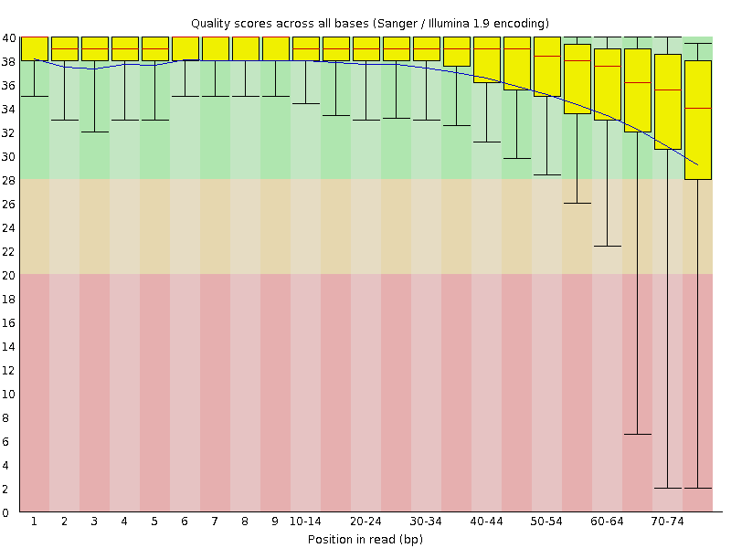
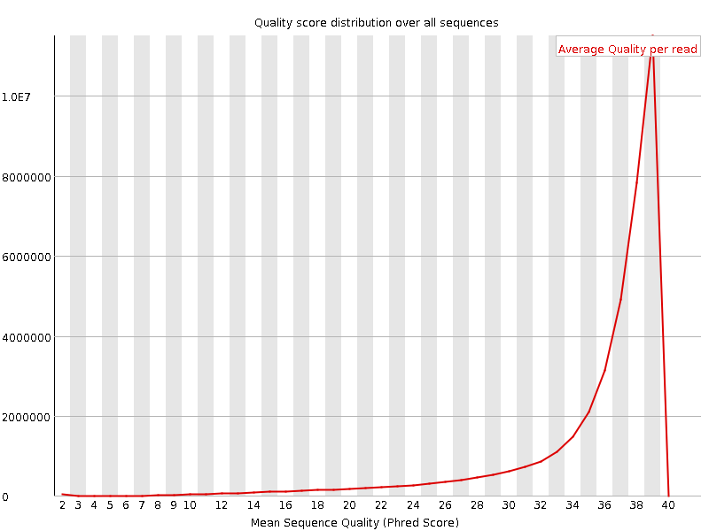
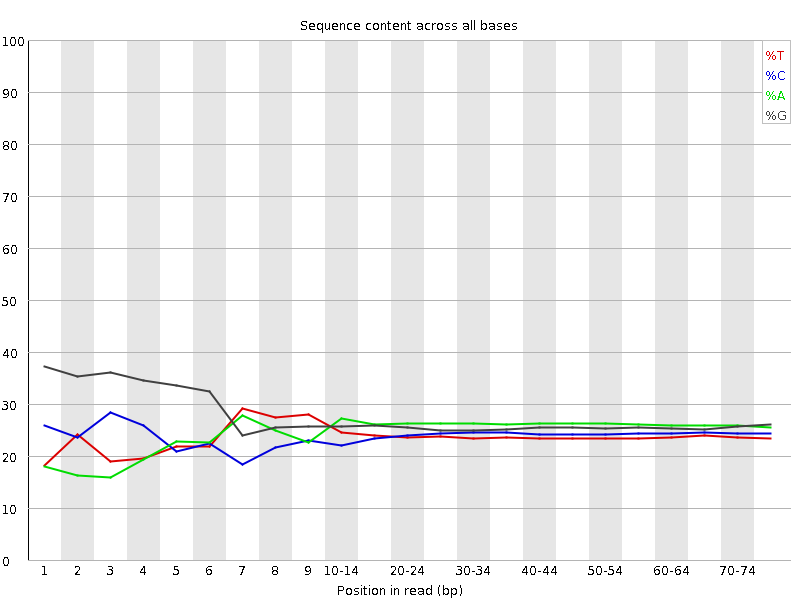
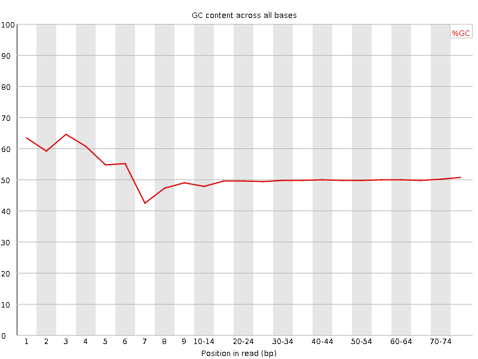
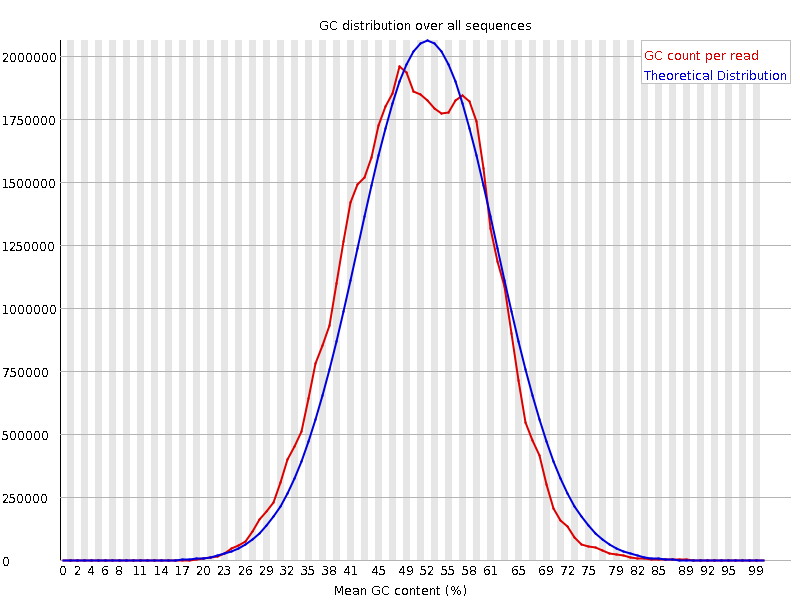
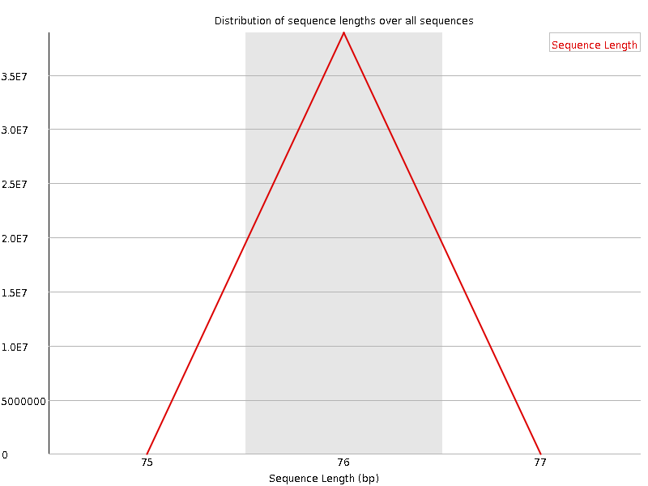
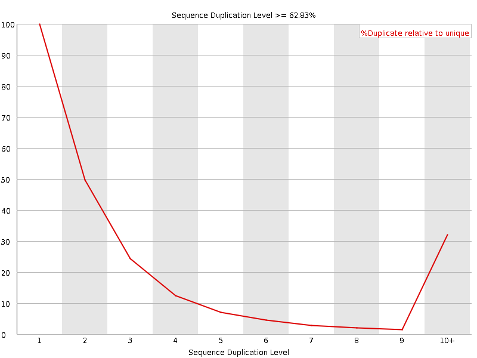
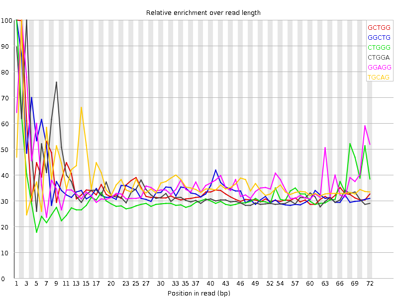

![[OK]](Icons/tick.png) Basic Statistics
Basic Statistics
| Measure | Value |
|---|---|
| Filename | SRR307921_1.fastq |
| File type | Conventional base calls |
| Encoding | Sanger / Illumina 1.9 |
| Total Sequences | 38900663 |
| Filtered Sequences | 0 |
| Sequence length | 76 |
| %GC | 50 |
Per base sequence quality

Per sequence quality scores

![[WARN]](Icons/warning.png) Per base sequence content
Per base sequence content

![[FAIL]](Icons/error.png) Per base GC content
Per base GC content

Per sequence GC content

Per base N content

Sequence Length Distribution

Sequence Duplication Levels

Overrepresented sequences
| Sequence | Count | Percentage | Possible Source |
|---|---|---|---|
| GTGCAGTGGCTATTCACAGGCGCGATCCCACTACTGATCAGCACGGGAGT | 86565 | 0.22252834096940713 | No Hit |
| GGATGTGTCTGGAGTCTTGGAAGCTTGACTACCCTACGTTCTCCTACAAA | 54317 | 0.13963001093323268 | No Hit |
| GTGGCTATTCACAGGCGCGATCCCACTACTGATCAGCACGGGAGTTTTGA | 51573 | 0.13257614658135775 | No Hit |
| GCAGTGGCTATTCACAGGCGCGATCCCACTACTGATCAGCACGGGAGTTT | 47572 | 0.12229097483505616 | No Hit |
| CTGGAGTCTTGGAAGCTTGACTACCCTACGTTCTCCTACAAATGGACCTT | 45518 | 0.11701085917224599 | No Hit |
Kmer Content

| Sequence | Count | Obs/Exp Overall | Obs/Exp Max | Max Obs/Exp Position |
|---|---|---|---|---|
| GCTGG | 6079660 | 2.074823 | 5.8646126 | 1 |
| GGCTG | 6055735 | 2.066658 | 5.790125 | 1 |
| CTGGG | 6032015 | 2.0585628 | 6.465688 | 1 |
| CTGGA | 5511125 | 1.9223181 | 5.429107 | 3 |
| GGAGG | 6550250 | 1.8962994 | 5.0965877 | 2 |
| TGCAG | 5395530 | 1.8819982 | 5.0275598 | 2 |
| GGGAG | 6105530 | 1.7675527 | 5.5197577 | 2 |
| GACCT | 3892530 | 1.478181 | 5.156127 | 54 |
| TGGGG | 4513460 | 1.4148186 | 6.1439056 | 1 |
| GTGGG | 4407290 | 1.3815379 | 7.2884803 | 1 |
| GGGTG | 4367365 | 1.369023 | 5.222403 | 2 |
| GGGGG | 4673310 | 1.3237022 | 6.492651 | 1 |
| GGGGA | 4489180 | 1.299619 | 6.131108 | 1 |
| GTGCA | 3477280 | 1.2128991 | 5.1342244 | 1 |
| GGTTT | 3141545 | 1.206106 | 5.405773 | 4 |
| GGGGT | 3713350 | 1.1640111 | 5.9119625 | 2 |
| CGGGG | 2496795 | 0.7699441 | 5.307587 | 1 |